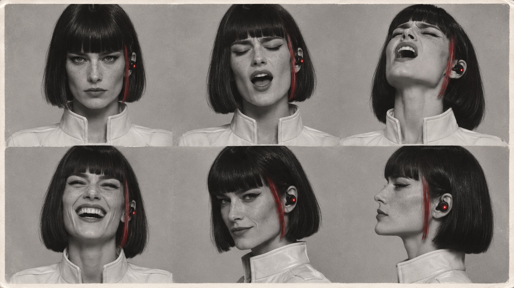
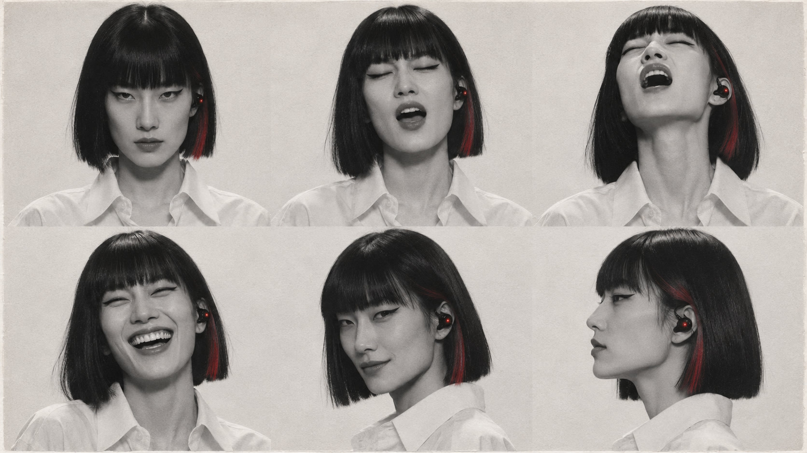
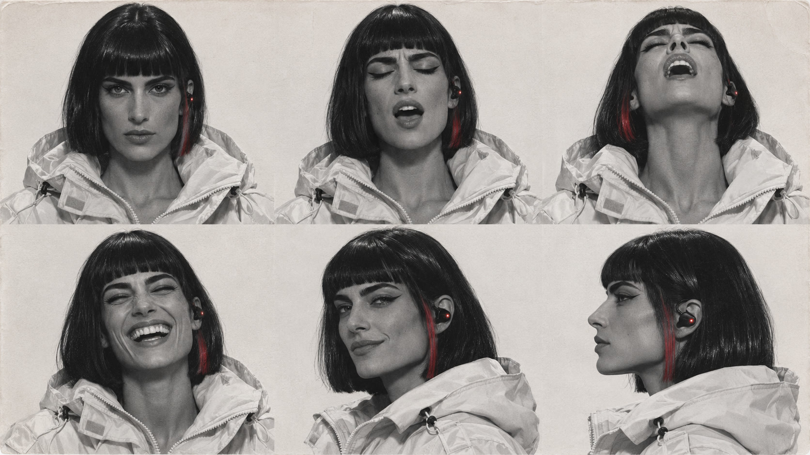

IRIS 换角：目前所有的脸
对照着说哪张最接近你要的、差在哪里（眼睛、脸型、年龄感、妆容、质感都可以）。点图看大图。
最早的 C2（偶像，你说「有点感觉但差点」）
C2
A–D（v3 第一轮，表情表）

A

B
C

D
B1–B4（东亚，B 的画风）
B1
B2
B3
B4
W1–W4（欧美，你说「脸太瘦了」）
W1
W2
W3
W4
F1–F4（欧美・饱满，你说「都不够好看」）
F1
F2
F3
F4


 B1
B1 B2
B2 B3
B3 B4
B4 W1
W1 W2
W2 W3
W3 W4
W4 F1
F1 F2
F2 F3
F3 F4
F4